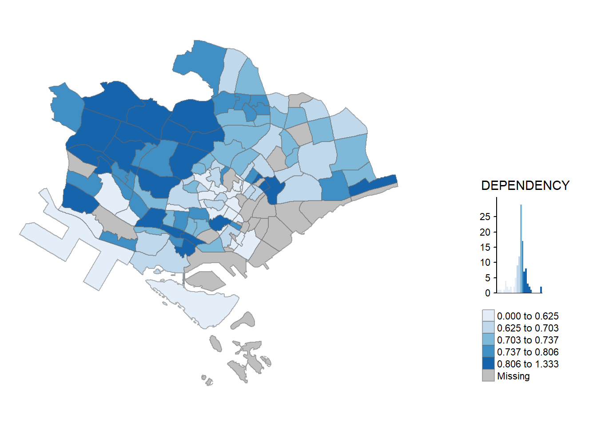

pacman::p_load(sf, tidyverse, tmap)Exercise 02 ‘Thematic Mapping and GeoVisualisation with R’
(Copied from Exercise) Overview:
In general, thematic mapping involves the use of map symbols to visualize selected properties of geographic features that are not naturally visible, such as population, temperature, crime rate, and property prices, just to mention a few of them.
Geovisualisation, on the other hand, works by providing graphical ideation to render a place, a phenomenon or a process visible, enabling human’s most powerful information-processing abilities – those of spatial cognition associated with our eye–brain vision system – to be directly brought to bear.
In this chapter, you will learn how to plot functional and truthful choropleth maps by using an R package called tmap package.
1 Import packages
2 Import data
mpsz <- st_read(
dsn="data/geospatial/MasterPlan2014SubzoneBoundaryWebSHP",
layer="MP14_SUBZONE_WEB_PL")
# mpsz
popdata <- read_csv("data/aspatial/respopagesextod2011to2020/respopagesextod2011to2020.csv", show_col_types = FALSE)
# popdata3 Data Preparation
Create Data Table for Year 2020
Aim: Create a data table for year 2020 values, containing columns PA, SZ, YOUNG, ECONOMY ACTIVE, AGED, TOTAL, and DEPENDENCY.
Derive values for:
- YOUNG: age group 0 to 4 until age groyup 20 to 24,
- ECONOMY ACTIVE: age group 25-29 until age group 60-64,
- AGED: age group 65 and above,
- TOTAL: all age group, and
- DEPENDENCY: the ratio between young and aged against economy active group
popdata2020 <- popdata %>%
filter(Time==2020) %>%
group_by(PA, SZ, AG) %>%
summarise(`POP` = sum(`Pop`)) %>%
ungroup()%>%
pivot_wider(names_from=AG,
values_from=POP) %>%
mutate(YOUNG = rowSums(.[3:6])
+rowSums(.[12])) %>%
mutate(`ECONOMY ACTIVE` = rowSums(.[7:11])+
rowSums(.[13:15]))%>%
mutate(`AGED`=rowSums(.[16:21])) %>%
mutate(`TOTAL`=rowSums(.[3:21])) %>%
mutate(`DEPENDENCY` = (`YOUNG` + `AGED`)/`ECONOMY ACTIVE`) %>%
select(`PA`, `SZ`, `YOUNG`, `ECONOMY ACTIVE`, `AGED`, `TOTAL`, `DEPENDENCY`)`summarise()` has grouped output by 'PA', 'SZ'. You can override using the
`.groups` argument.popdata2020# A tibble: 332 × 7
PA SZ YOUNG `ECONOMY ACTIVE` AGED TOTAL DEPENDENCY
<chr> <chr> <dbl> <dbl> <dbl> <dbl> <dbl>
1 Ang Mo Kio Ang Mo Kio Town Cen… 1440 2610 760 4810 0.843
2 Ang Mo Kio Cheng San 6640 15460 6050 28150 0.821
3 Ang Mo Kio Chong Boon 6150 13950 6470 26570 0.905
4 Ang Mo Kio Kebun Bahru 5540 12090 5120 22750 0.882
5 Ang Mo Kio Sembawang Hills 2100 3410 1310 6820 1
6 Ang Mo Kio Shangri-La 3960 8420 3610 15990 0.899
7 Ang Mo Kio Tagore 2220 4200 1530 7950 0.893
8 Ang Mo Kio Townsville 4690 11450 5100 21240 0.855
9 Ang Mo Kio Yio Chu Kang 0 0 0 0 NaN
10 Ang Mo Kio Yio Chu Kang East 1220 2300 750 4270 0.857
# ℹ 322 more rowsJoin attribute and geospatial data (geolocational join)
# convert PA and SZ variable data to upper cases to match SUBZONE_N and PLN_AREA_N of mspz
popdata2020 <- popdata2020 %>%
mutate_at(.vars = vars(PA, SZ),
.funs = list(toupper)) %>%
filter(`ECONOMY ACTIVE` > 0)
# left join by SUBZONE_N = SZ
mpsz_pop2020 <- left_join(mpsz, popdata2020,
by = c("SUBZONE_N" = "SZ"))Export/Write Data frame as RDS object
# Write to a R Data Serialization(RDS) file, which is useful for storing state of objects between R sessions
write_rds(mpsz_pop2020, "data/rds/mpszpop2020.rds")4 Choropleth Mapping Geospatial Data Using tmap
tmap_mode("plot")tmap mode set to plottingqtm(mpsz_pop2020,
fill = "DEPENDENCY")
# mpsz_pop2020# ggplot(data=mpsz_pop2020,
# mapping=aes(
# y="DEPENDENCY", x=""))tm_shape(mpsz_pop2020)+
tm_fill("DEPENDENCY",
style = "quantile",
palette = "Blues",
title = "Dependency ratio") +
tm_layout(main.title = "Distribution of Dependency Ratio by planning subzone",
main.title.position = "center",
main.title.size = 1.2,
legend.height = 0.45,
legend.width = 0.35,
frame = TRUE) +
tm_borders(alpha = 0.5) +
tm_compass(type="8star", size = 2) +
tm_scale_bar() +
tm_grid(alpha =0.2) +
tm_credits("Source: Planning Sub-zone boundary from Urban Redevelopment Authorithy (URA)\n and Population data from Department of Statistics DOS",
position = c("left", "bottom"))# sf::st_is_valid(st_make_valid(mpsz_pop2020))# sf::st_make_valid(mpsz_pop2020)
# tmap_options(check.and.fix = TRUE)
# tmap_mode("plot")
tm1 <- tm_shape(mpsz_pop2020) + tm_polygons() + tm_layout(
main.title = "1. Base map using polygons, no colour",
main.title.position = "center",
main.title.size = 1)
tm2 <- tm_shape(mpsz_pop2020)+ tm_polygons("DEPENDENCY") + tm_layout(
main.title = "2. Base map using polygon, chloropeth colouring using attribute 'DEPENDENCY'",
main.title.position = "center",
main.title.size = 1)
tm3 <- tm_shape(mpsz_pop2020)+ tm_fill("DEPENDENCY") + tm_layout(
main.title = "3. Base map using fill, colour based on 'DEPENDENCY'",
main.title.position = "center",
main.title.size = 1)
tm4 <- tm_shape(mpsz_pop2020) + tm_fill("DEPENDENCY") + tm_borders(lwd = 0.1, alpha = 1) + tm_layout(
main.title = "4. Add fill but with borders",
main.title.position = "center",
main.title.size = 1)
tm5 <- tm_shape(mpsz_pop2020) + tm_fill("DEPENDENCY", n = 5, style = "quantile") + tm_borders(alpha = 0.5) + tm_layout(
main.title = "5. Specify the data-classification as 'quantile', set to 5 categories",
main.title.position = "center",
main.title.size = 1)
tm6 <- tm_shape(mpsz_pop2020) + tm_fill("DEPENDENCY", n = 5, style = "equal") + tm_borders(alpha = 0.5) + tm_layout(
main.title = "6. Specify the data-classification as 'equal', set to 5 categories",
main.title.position = "center",
main.title.size = 1)
tm1
tm2tm3tm4tm5tm6summary(mpsz_pop2020$DEPENDENCY) Min. 1st Qu. Median Mean 3rd Qu. Max. NA's
0.1111 0.7147 0.7866 0.8585 0.8763 19.0000 92 tm_shape(mpsz_pop2020)+
tm_fill("DEPENDENCY",
breaks = c(0, 0.60, 0.70, 0.80, 0.90, 1.00)) +
tm_borders(alpha = 0.5)Warning: Values have found that are higher than the highest break
tm_shape(mpsz_pop2020)+
tm_fill("DEPENDENCY",
n = 6,
style = "quantile",
palette = "Blues") +
tm_borders(alpha = 0.5)
tm_shape(mpsz_pop2020)+
tm_fill("DEPENDENCY",
style = "quantile",
palette = "-Greens") +
tm_borders(alpha = 0.5)
tm_shape(mpsz_pop2020)+
tm_fill("DEPENDENCY",
style = "jenks",
palette = "Blues",
legend.hist = TRUE,
legend.is.portrait = TRUE,
legend.hist.z = 0.1) +
tm_layout(main.title = "Distribution of Dependency Ratio by planning subzone \n(Jenks classification)",
main.title.position = "center",
main.title.size = 1,
legend.height = 0.45,
legend.width = 0.35,
legend.outside = FALSE,
legend.position = c("right", "bottom"),
frame = FALSE) +
tm_borders(alpha = 0.5)
tmap_style("classic")tmap style set to "classic"other available styles are: "white", "gray", "natural", "cobalt", "col_blind", "albatross", "beaver", "bw", "watercolor" tm_shape(mpsz_pop2020)+
tm_fill("DEPENDENCY",
style = "quantile",
palette = "-Greens") +
tm_borders(alpha = 0.5)
tm_shape(mpsz_pop2020)+
tm_fill("DEPENDENCY",
style = "quantile",
palette = "Blues",
title = "No. of persons") +
tm_layout(main.title = "Distribution of Dependency Ratio \nby planning subzone",
main.title.position = "center",
main.title.size = 1.2,
legend.height = 0.45,
legend.width = 0.35,
frame = TRUE) +
tm_borders(alpha = 0.5) +
tm_compass(type="8star", size = 2) +
tm_scale_bar(width = 0.15) +
tm_grid(lwd = 0.1, alpha = 0.2) +
tm_credits("Source: Planning Sub-zone boundary from Urban Redevelopment Authorithy (URA)\n and Population data from Department of Statistics DOS",
position = c("left", "bottom"))
tmap_style("white")tmap style set to "white"other available styles are: "gray", "natural", "cobalt", "col_blind", "albatross", "beaver", "bw", "classic", "watercolor" tm_shape(mpsz_pop2020)+
tm_fill(c("YOUNG", "AGED"),
style = "equal",
palette = "Blues") +
tm_layout(legend.position = c("right", "bottom")) +
tm_borders(alpha = 0.5) +
tmap_style("white")tmap style set to "white"other available styles are: "gray", "natural", "cobalt", "col_blind", "albatross", "beaver", "bw", "classic", "watercolor" 
tm_shape(mpsz_pop2020)+
tm_polygons(c("DEPENDENCY","AGED"),
style = c("equal", "quantile"),
palette = list("Blues","Greens")) +
tm_layout(legend.position = c("right", "bottom"))
tm_shape(mpsz_pop2020) +
tm_fill("DEPENDENCY",
style = "quantile",
palette = "Blues",
thres.poly = 0) +
tm_facets(by="REGION_N",
free.coords=TRUE,
drop.shapes=TRUE) +
tm_layout(legend.show = FALSE,
title.position = c("center", "center"),
title.size = 20) +
tm_borders(alpha = 0.5)Warning: The argument drop.shapes has been renamed to drop.units, and is
therefore deprecated
youngmap <- tm_shape(mpsz_pop2020)+
tm_polygons("YOUNG",
style = "quantile",
palette = "Blues")
agedmap <- tm_shape(mpsz_pop2020)+
tm_polygons("AGED",
style = "quantile",
palette = "Blues")
tmap_arrange(youngmap, agedmap, asp=1, ncol=2)
tm_shape(mpsz_pop2020[mpsz_pop2020$REGION_N=="CENTRAL REGION", ])+
tm_fill("DEPENDENCY",
style = "quantile",
palette = "Blues",
legend.hist = TRUE,
legend.is.portrait = TRUE,
legend.hist.z = 0.1) +
tm_layout(legend.outside = TRUE,
legend.height = 0.45,
legend.width = 5.0,
legend.position = c("right", "bottom"),
frame = FALSE) +
tm_borders(alpha = 0.5)Warning in pre_process_gt(x, interactive = interactive, orig_crs =
gm$shape.orig_crs): legend.width controls the width of the legend within a map.
Please use legend.outside.size to control the width of the outside legend